Merci aux communes et aux collectivités qui soutiennent la transmission de la mémoire et relaient cette démarche. Chaque lien ouvre le site officiel de la mairie ou du service concerné.
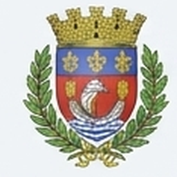
Ville de LorientArchives & PatrimoineVisiter le site officiel ↗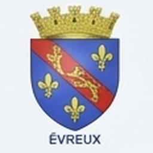
Ville d’ÉvreuxVisiter le site officiel ↗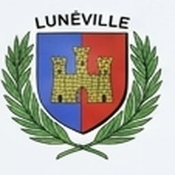
Ville de LunévilleVisiter le site officiel ↗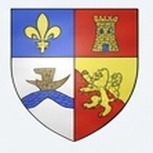
Saint-Aubin-sur-MerVisiter le site officiel ↗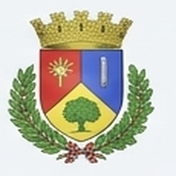
Ville de FontoyVisiter le site officiel ↗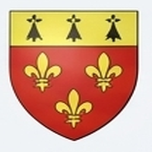
Saint-ÉliphVillage du PercheVisiter le site officiel ↗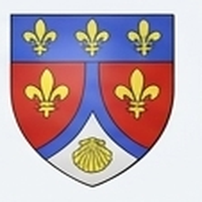
Blosseville-sur-MerVisiter le site officiel ↗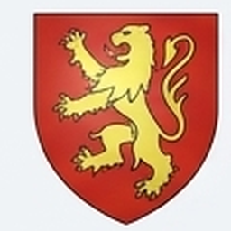
AnnecyVisiter le site officiel ↗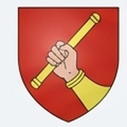
Le MansVisiter le site officiel ↗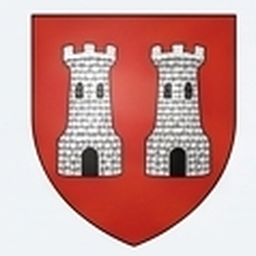
ToursVisiter le site officiel ↗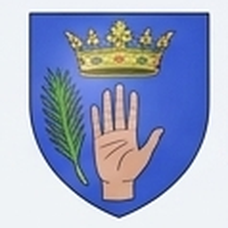
Saint-ÉtienneVisiter le site officiel ↗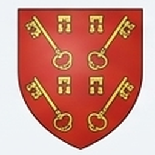
NarbonneVisiter le site officiel ↗ ChambéryVisiter le site officiel ↗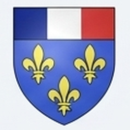
AmiensVisiter le site officiel ↗Noms et liens repris de la planche Canva « Mairies partenaires ». Les éléments graphiques de chaque collectivité sont leurs marques respectives.